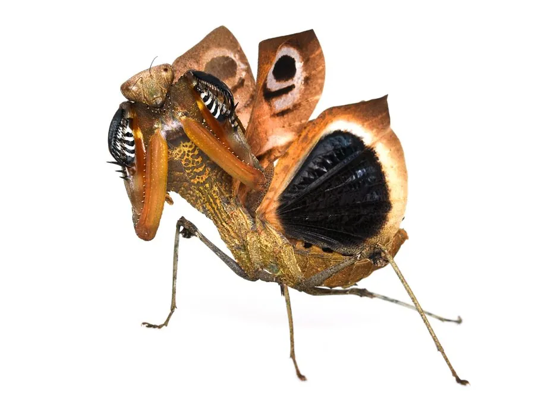

昆虫 · 动物界
枯叶螳 Deroplatys desiccata

全身拟态枯叶的大型螳螂，前胸背板和腹部扩展成宽大的叶状，翅面带有霉斑，静止时与落叶几乎无法区分。
- 分类
- 门节肢动物门纲昆虫纲目螳螂目科螳螂科属叶螳属
- 栖息环境
- 热带雨林的林下落叶层和低矮灌木
- 地理分布
- 马来西亚、印度尼西亚等东南亚地区
- 保护级别
- 暂无评估
物种志
枯叶螳雌成虫体长 65–80 mm，雄虫较小。体色深褐至灰褐，前胸背板向两侧扩展成宽大的叶状片，边缘不规则；腹部宽扁，带有类似叶脉的脊纹，前翅表面还有深浅不一的斑块，模仿枯叶上的霉斑和破损。
枯叶螳分布于马来西亚、印度尼西亚等东南亚热带雨林，生活在林下落叶层和低矮灌木间。它是拟态昆虫中的经典例子，静止时把身体贴在枝条上，宽大的叶状结构让它看起来就是一片枯萎的叶子，连走动时都会轻轻摇晃。枯叶螳是伏击型捕食者，捕食蛾类、蝇类和蟑螂等。雌虫产卵时把卵鞘固定在枝条上，卵鞘的外形也像一小片枯叶。它因外形奇特而成为昆虫爱好者的热门饲养对象，野生种群受雨林砍伐的影响。
形态与习性
- 食性伏击捕食蛾类、蝇类和蟑螂
- 体长雌虫 65–80 mm，雄虫较小
- 拟态前胸背板扩展成叶状，前翅有霉斑
- 行为走动时轻轻摇晃，像被风吹动的落叶
- 繁殖卵鞘固定在枝条上，形似小枯叶
- 威胁野生种群受热带雨林砍伐影响
趣味知识
- 枯叶螳前翅上的斑块模仿了枯叶发霉的痕迹，细节极为逼真。
- 它静止时连足都紧贴枝条，整只螳螂就是一片落叶。
- 枯叶螳的卵鞘外形也像一小片枯叶，很难被天敌发现。